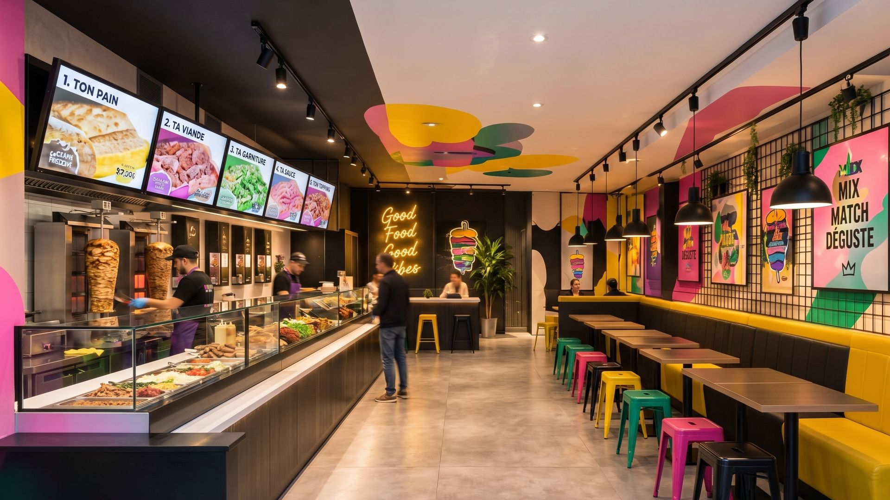
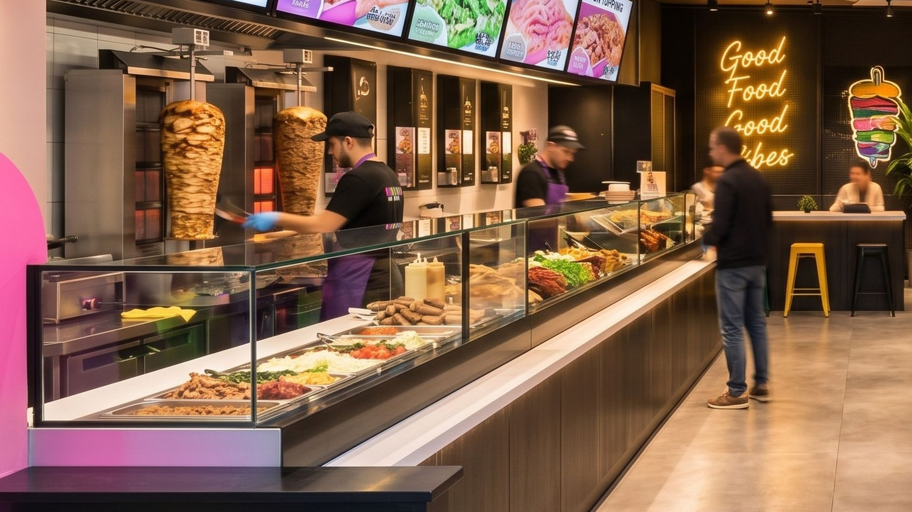
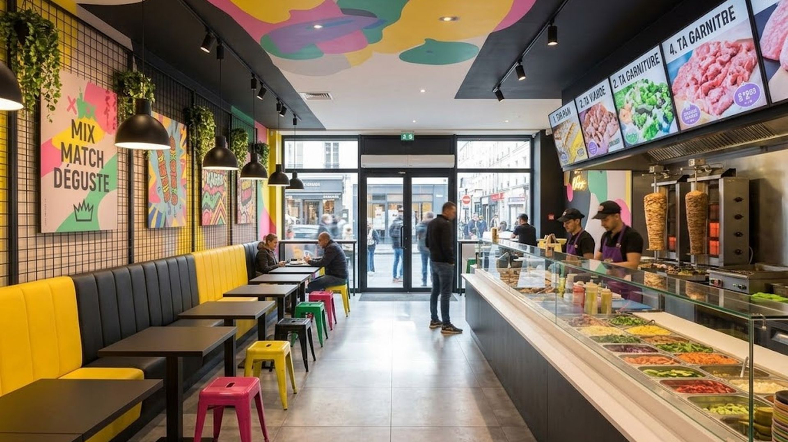
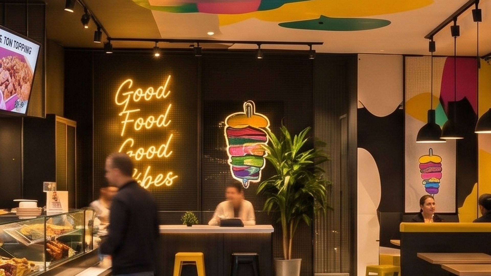
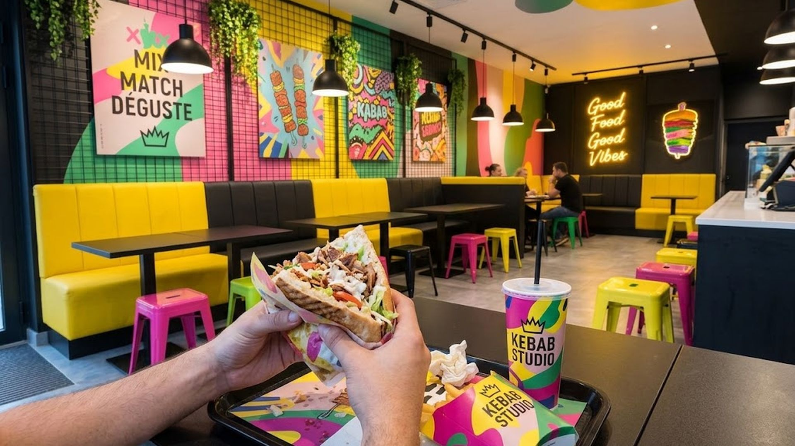
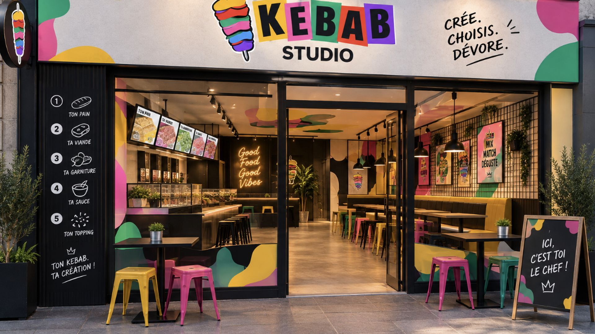

Kebab Studio — Amiens, rue des Trois-Cailloux
Et toi,
tu mets quoi ?
Le kebab où c'est toi qui écris la recette.
5 étapes
Crée. Choisis. Dévore.
Plus de 160 millions de combinaisons. Une seule règle : la tienne.
La maison
Ton idée.
Ton kebab.
Pain artisanal, viande française 100 % halal, deux sauces maison. Le reste, c'est toi qui décides.
Le seuil
Entre.
Ici, c'est toi le chef.
Le comptoir est juste derrière. Suis le guide.
Crée ton kebab




Station 1/5 Le comptoir
Un comptoir. Cinq étapes.
Zéro kebab pareil.
Ici, pas de menu figé au-dessus de la caisse. Tu avances le long du comptoir et tu composes : ton pain, ta viande, ta garniture, ta sauce, ton topping. On prépare sous tes yeux, dans l'ordre que tu as choisi.
Clique sur les points pour explorer le comptoir.
- Les écrans 5 étapes, 1 kebab unique.
- La broche Viande française, 100 % halal.
- Les sauces 12 sauces, dont 2 maison.
- La vitrine 20 garnitures, 4 incluses.
Station 2/5 La broche
Ça dore à la broche.
Ça se tranche à la minute.
Veau-dinde et poulet, dorés lentement, tranchés quand tu commandes. Envie d'autre chose ? Bavette grillée, poulet crousty, poulet pané, merguez ou falafels maison. Et chaque pain est artisanal, du naan au fromage au pain au sésame.
Station 3/5 La salle
Ici, on ne mange pas
sur le pouce.
Banquettes jaunes, tabourets rose, vert et jaune, plafond peint en taches de couleur. 35 places pour poser le plateau, refaire le monde et comparer vos créations.
Station 4/5 Le coin néon
Good Food.
Good Vibes.
Le néon doré, la banquette jaune, ton kebab en main : le spot est prêt. Prends ta photo, poste ta création avec #MonKebabStudio. Les meilleures repassent sur notre compte.
Station 5/5 Ta place
Ta recette a un nom.
Le tien.
À la fin des 5 étapes, ta création reçoit son nom et son numéro : L'Ophélie #472, L'Elisa #031… Si elle cartonne, elle entre à la carte : c'est La Création du Mois.
Crée ton kebabCrée ton kebab
À toi de jouer.
Cinq étapes, une recette.
Compose ton kebab comme au comptoir. Le prix se calcule en direct.
PRÉNOM #000
Une création unique. Comme toi.
Suis-nous @kebabstudio.amiens · bientôt
Nos engagements
Pas d'avis inventés.
Juste des chiffres vrais.
6 pains × 7 viandes × 4 garnitures parmi 20 × 2 sauces parmi 12 × 12 toppings = 161 164 080.
- Pain artisanal
- Option vegan
- Boissons clean : kombucha, matcha, Ciao Energy
- Emballages mono-matériau, pas de couverts jetables sur place

L'adresse
Rue des Trois-Cailloux.
Amiens, en plein centre.
Le premier Studio ouvre dans la rue piétonne du centre-ville, entre la gare et l'hôtel de ville.
Ouverture prochaine
- Horaires
- Tous les jours 11h30 – 23h
Vendredi et samedi jusqu'à 1h - Pour commander
- Sur place · à emporter · click & collect · livraison bientôt
Et toi,
tu mets quoi ?
Cinq étapes. Une recette à ton nom.